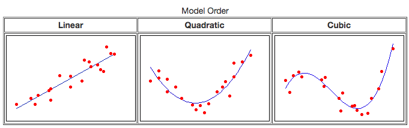

03_linear_regression
**Table of Contents** ¶
Mathematically, a linear relationship between X and Y can be written as
$$Y \approx \beta_{0} + \beta_{1}X$$
$\beta_{0}$ and $\beta_{1}$ represent the intercept and slope. They are the model coefficients or parameters. Through regression we estimate these parameters. The estimates are represented as $\hat\beta_{0}$ and $\hat\beta_{1}$. Thus,
$$\hat y = \hat\beta_{0} + \hat\beta_{1}x$$We estimate $\hat\beta_{0}$ and $\hat\beta_{1}$ using least squared regression. This technique forms a line that minimizes average squared error for all data points. Each point is weighed equally. If
is the prediction for ith value pair of x, y, then the error is calculated as
$$e_{i} = y_{i} - \hat y_{i}$$. This error is also called a residual. This the residual sum of squares (RSS) is calculated as
$$RSS = e_{1}^{2} + e_{2}^{2}… + e_{i}^{2}$$
Thus if the relationship between $X$ and $Y$ is approximately linear, then we can write: $$Y = \beta_{0} + \beta_{1}X + \epsilon$$
where $\epsilon$ is the catch-all error that is introduced in forcing a linear fit for the model. The above equation is the population regression line. In reality, this is not known (unless you synthesize data using this model). In practice, you estimate the population regression with a smaller subset of datasets.
Using Central Limit Theorem, we know the average of a number of sample regression coefficients, predict the population coefficients pretty closely. Proof is availble here.
Standard error¶ ¶
By averaging a number of estimations of $\hat\beta_{0}$ and $\hat\beta_{1}$, we are able to estimate the population coefficients in an unbiased manner. Averaging will greatly reduce any systematic over or under estimations when choosing a small sample.
Now, how far will a single estimate of $\hat\beta_{0}$ be from the actual $\beta_{0}$? We can calculate it using standard error.
To understand standard error let us consider the simple case of estimating population mean using a number of smaller samples. The standard error in a statistic (mean in this case) can be written as:
$$ SE(\hat\mu) = \frac{\sigma}{\sqrt{n}}$$where $\hat\mu$ is the estimate for which we calculate the standard error for (sample mean in this case), $\sigma$ is the standard deviation of the population and $n$ is the size of the sample you draw each time.
The SE of $\hat\mu$ is the same as the Standard Deviation of the sampling distribution of a number of sample means. Thus, the above equation gives the relationship between sample mean and population mean and sample size and how far will the sample mean be off. Thus:
$$ SD(\hat\mu) = SE(\hat\mu) = \frac{\sigma}{\sqrt n}$$Note, SE is likely to be smaller if you have a large sample. The value of SE is the average amount your $\hat\mu$ deviates from $\mu$.
In reality, you don’t have $\sigma$ or $\mu$. Thus, using the SE formula, we can calculate the SD of population as:
$$\sigma = \sigma_{\hat\mu}*\sqrt n $$Applications of Standard Error¶ ¶
Confidence Intervals: SE is used to compute CI. A 95% CI is defined as the range of values such that with 95% probability, the range will contain the true unknown value of the parameter. Similar is 99% CI. Thus, 95% CI for $\beta_{1}$ is written as
Same for $\beta_{0}$.
Hypothesis tests: SE is also used to perform hypothesis tests on coefficients. Commonly,
- null hypothesis: $H_{0}$: there is no relationship between X and Y - meaning $\beta_{1} \ = \ 0$
- alternate hypothesis: $H_{a}$: there is some significant relationship
To disprove $H_{0}$, we need
- $\hat \beta_{1}$ to be sufficiently large: (either positive or negative), or,
- $SE(\hat \beta_{1})$ to be small, then even relatively small values of $\hat \beta_{1}$ would be statistically significant. Else, slope has to be really large.
We compute t-statistic to evaluate the significance of $\beta$, which is similar to computing z scores.
$$
t \ = \ \frac{\hat \beta_{1} - 0}{SE(\hat \beta_{1})}
$$
We get scores for t distribution. t follows standard normal for n>30. The p-value we get is used to evaluate the significance of the estimate. A small p-value indicates the relationship between predictor and response is unlikely to be by chance.
To reject the null hypothesis, we need a p-value < 0.005 and t-statistic < 2
Multiple Linear Regression¶ ¶
To fit the effects of multiple predictors, we extend the simple linear model by providing a coefficient for each predictor. Thus:
$$ Y = \beta_{0} + \beta_{1}X_{1} + \beta_{2}X_{2} + … + \beta_{p}X_{p} + \epsilon $$we interpret $\beta_{p}$ as the average effect on $Y$ that predictor variable has when holding all other variables constant.
What to look for in multiple linear regression¶ ¶
1. Is there a relationship between response and predictor variables¶ ¶
We run hypothesis tests, just that, $H_{0}$ checks for all coefficients to be 0 and $H_{a}$ checks for at least one of $\beta_{p}$ is non zero.
In simple linear regression, the hypothesis tests were conducted against a t distribution, where as in multiple linear regression, we compute a F distribution. The p-values are against this F distribution.
Hallmarks of a valid regression analysis¶ ¶
Source: Regression tutorial from Minitab
Applications of regression analysis:
- multiple predictor variables
- continuous and categorical variables
- higher-order terms to model curvature
- interaction terms to see if the effect of one predictor depends upon the value of another
What to put in a regression output¶ ¶
- Coefficients of each predictors. The coefficients indicate how influential a predictor is.
- Std. Error $S$ of coefficients
-
p-valueof each coefficient. A lowp-value, (lower than0.05) indicates the confidence in predicting the coefficient. -
95%CI of each coefficient prediction -
residual plots
-
Fitted vs Residual plot to ensure the residuals don’t follow any pattern. Residuals should be random around the prediction line, with
mean=0). If residuals follow a pattern, then the model is missing or leaking some phenomena into the error term. You may be missing an important predictor variable. - QQ plot of residuals against standard normal to assess normalcy of residuals
- histograms of residuals can also be used to assess normalcy.
-
Fitted vs Residual plot to ensure the residuals don’t follow any pattern. Residuals should be random around the prediction line, with
Example from Minitab

R-squared¶ ¶
$R^2$ is calculated as the ratio of variance in predicted Y to actual Y. In other words, it compares the distance between actual values to mean vs predicted values to mean.
$$
R^2 = \frac{(\hat y - \bar y)^2}{(y-\bar y)^2} $$
$R^2$ measures the strength of the relationship between predictors and response. It ranges from 0-100% or 0-1.
$R^2$ is limited, it cannot quite tell you if the model is systematically under or over predicting values. Since it compares deviation from mean, if values fall farther from regression line, yet keep the same variation from mean as actual, then $R^2$ is high. However, this does not mean the model is a good fit.
Since it is inherently biased, some researchers don’t use this at all.
S - Standard error in Regression¶
¶
A better estimate of regression is Standard Error (also called RSE - residual standard error) which measures average distance each actual value falls from regression line. It is calculated as below:
$$ S = \sqrt{\frac{\sum (\hat y -y)^2}{n-2}} $$S represents, in the units of predicted variable, on average how far the actual values fall from prediction.

Confidence intervals¶ ¶
Approximately 95% of predictions fall within $\pm 2 standard error$ of regression from regression line.
Problems¶ ¶
Multicollinearity is when predictors are correlated. In ideal case, each predictor should be independent which helps us properly assess their individual influence on the phenomena.
P-values¶ ¶
The p-value of a coefficient is the probability of
- $H_{0} \ = \ 0$ : Null hypothesis that coefficient is 0. That is, it has no effect on the model / phenomena
- $\alpha$ is the threshold you set to determine what is statistically significant. By convention it is
0.95forp-values. Thus, those coefficents whosep-values are less than $\alpha$ have a significant coefficient. The size of the coefficient determines their influence on the model itself, not thep-value.
When you simplify your model (step-wise forward or hierarchical), you start by removing those predictors whose p-value is greater than $\alpha$.
Coefficients¶ ¶
Regression coefficients represent the mean value by which the predicted variable will change for 1 unit change in that particular predictor variable while holding all other variables constant. Thus, regression provides a high level of explainability associated with each variable and its influence on the phenomena.
R-squared¶ ¶
As said before, $R^{2}$ measures the variability of predicted data vs actual data with mean. It can be interpreted as proportion of variability in Y that can be explained using X. A regression with high p-value and low $R^{2}$ is problematic. What this means is the trend (slope) is significant where as the data has a lot of inherent variability that the model does not explain well.
In the case of simple linear regression, $R^{2}$ equals the correlation coefficient $r$. However, in multiple linear regression, this relationship does not extend.
S¶ ¶
The Std. Error in regression (also called as RSE (residual standard error)) quantifies how far the points are spread from the regression line. This also helps build the prediction interval and understand what the error would be on average when you predict unknown dataset.
RSE takes the unit of predicted variable. Determining whether or not an RSE is good depends on the problem context.
Explaining a regression analysis¶ ¶
Resource Follow the axioms below when you try to explain a regression analysis
- do not use
p-valueto explain influence of a predictor.p-valueonly suggests the significance of the coefficient not being0 - do not compare the importance of two predictors based on their coefficients (slopes). The variables might be in different units and hence may not be a fair comparison
- To compare predictors, standardize them (subtract mean and divide by SD -> transform to std. normal Z scores)
- Now compare the coefficients for influence.
- When you add more variables to the model, the $R^{2}$ increases, but this does not mean the model improves. In this case, calculate the adj.$R^{2}$ which accounts for this.
- Another approach is, when you build the model step-wise, find the variable that accounts for greatest increase in $R^{2}$ value. That is the most influential predictor.
- Another adavantage of standardization is it reduces multicollinearity
Types of regression analysis¶ ¶
Predicting categorical response variable:¶ ¶
- binary logistic regression: response falls into one of two categories (Yes or No)
- ordinal logistic regression: response is in categories (discrete) and can be ordered from least to greatest
- nominal logistic regression: response is in categories (discrete) and not follow any order.
Regressing a continuous response:¶ ¶
The response is on a continuous scale.
- OLS - ordinary least squares regression: Linear and multiple regressions. One or more continuous predictors and a continuous response. Note: here, the predictors are also continuous, not categorical.
- Stepwise regession: This is a technique to find influential predictors, not a type of regression. Methods include forward selection, backward elimination.
- Nonlinear regression: use a non-linear function to model a set of continuous predictors and predict continuous response variable.
Linear vs Non linear regression vs Transformation¶ ¶
Contrary to popular belief, linear regression can produce curved fits! An equation is considered non linear when the predictor variables are multiplicative rather than additive. Using log, quadratic, cubic functions, you can produce a curved linear fit.
In general, you choose the order of the equation based on number of curves you need in the fit.

As you see, quadratic produces 1 curve while cubic produces 2 curves.
Reciprocal transformation¶ ¶
As X increases, if your data (Y) descends to floor or ascends to a ceiling and flat lines, then the effect of X flattens out as it increases. In these cases, you can do a reciprocal of X and fit against it. Sometimes a quadratic fit of reciprocal of X would be a good fit.
Log transformation¶ ¶
Log transform can rescue a model from non-linear to linear territory. When you take log on both sides of equation, multiplication signs become additions and exponential signs become multiplications.
For instance: $$ Y = e^{B_{0}}X_{1}^{B_{1}}X_{2}^{B_{2}} $$ transforms to below when you take log on both sides (double-log form): $$ Ln Y = B_{0} + B_{1}lnX_{1} + B_{2}lnX_{2} $$
Non-linear models¶ ¶
Non linear models have predictors that in product with each other. In general, nonlinear models can take any number of formats. The trick is to finding one that will fit the data. Some limits of non-linear models
- lack of interpretability. You cannot clearly state the influence each predictors have on the phenomena
- You cannot find
p-valuesandCIfor the coefficients. - You don’t have $R^2$ statistic to evaluate the goodness of fit.